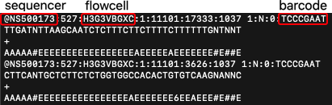

Introduction
This is the computer practical for the Functional Genomics 1 course. It builds upon R programming skills taught in the first year during Genomics and Big Data and a basic understanding of the R programming language is required. We will also use statistics from the course Statistics 1.
The purpose of this practical is to teach you common bio-informatics analyses performed to analyse epigenomics data. You may already be familiar with the output of these analyses from scientific publications or lectures. We will focus on how to detect, quantify, annotate and visualise epigenetic marks. At the end of our analyses, we will also relate epigenetic markings to gene activity as well as candidate TFs that might establish them.
For this practical, we will use data of white blood cells from the the BLUEPRINT project, namely: monocytes, T cells, B cells and natural killer cells. We have chosen these datasets because they are well-documented and easy to find through the BLUEPRINT data portal, and not because we want to teach you the hematopoietic system.
Global learning objectives
- Explain how to process raw reads from a ChIP-sequencing experiment.
- Display and browse genomics data in the UCSC Genome Browser.
- Distinguish different genomic datasets based on their coverage profile in the UCSC Genome Browser.
- Quantify the overlap among histone ChIP-seq peaks and promoters.
- Visually summarize this quantification in a venn diagram.
- Statistically test for enrichment of this histone marks in promoters.
- Identify the nearest TSS to a histone ChIP-seq peak.
- Plot the distribution of distances to the TSS.
- Summarize the signal signal strength of a histone ChIP-seq dataset around a genomic feature like the TSS or across gene body.
- Visualize the distribution of signal strength in a density plot.
- Visualize the signal strength around the TSS in a clustered heatmap.
- Check hypotheses about the epigenetic landscape based on single-cell RNA-seq data with actual epigenomics data, and vice versa (check hypotheses on gene activity in single-cel RNA-seq data).
Structure of this practical
We have divided these global learning objectives into 4 parts:
Week 1: Raw ChIP-seq data processing and visualize epigenomics data in the UCSC Genome browser.
Global learning objectives #1-3.
Week 2: Quantify the (co-)occurrences of epigenetic marks and use this to annotate genomic regions.
Global learning objectives #4-5.
Week 3: Compare epigenetic profiles among different cell types.
Global learning objectives #5-6.
Week 4: Synthesis: epigenomics and scRNA-seq.
Global learning objectives #12.
Need help?
Use the virtual classroom space in Brightspace/Zoom meeting when you need advice. A lecturer will be present there during practical hours.
Additional links to resoures can be found under links
1.1 Learning Objectives
This week’s focus will be on how sequencing data is processed and acquint ourselves with the UCSC Genome browser as a tool to visually inspect (epi-)genomics data.
At the end of week 1 you are able to
- Explain the steps taken to go from a ChIP-seq experiment, to raw data, and finally to data usable for analysis.
- Recognize the following elements in the UCSC genome browser: chromosome, centromere, telomere, gene, exon, intron, utr, promoter, and (candidate) enhancer/repressors.
- Go to regions of interest in the genome browser.
- Explain the difference between ‘uptream’ and ‘downstream’.
- Identify peaks in the coverage tracks of a histone ChIP-seq experiment in the genome browser.
- Identify tracks of H3K27ac, H3K27me3, H3K36me3, H3K4me1, H3K4me3 and H3K9me3 histone ChIP-seq and DNaseI-seq signal (and ChIP-seq input) based on their coverage profile and their location with respect to genes and other annotated genomic/chromosomal elements.
- These refer to Global learning objectives #1-3.
1.2 From sample to raw data
Briefly review ChIP-seq, library preperation for next-generation sequencing and analysis of the resulting data with the following video:
ChIP-seq by Statquest, duration of 8:30:
Background: There are several manufacturers of sequencing machines and reagents. Illumina is a common one. The Illumina technology is summarized in the following videos (optional):
- Introduction to Illumina Sequencing, Rob Edwards, duration 2:45
- Illumina Sequencing Technology, Illumina, duration 5:03
In summary, Illumina sequencing involves:
- Library preperation (also called sample preperation):
- Extract DNA from your sample.
- Fragment this DNA.
- Ligate adapters to the fragment these contain a sample specific sequence (= barcod or index), regions complementary to oligo’s that are found on the flow cell (these oligo’s are called P5 and P7) and primer bindings sites for sequencing (Rd1 SP and Rd2 SP):
- Load library on the flow cell:
- The flow cell is a glass slide with P5 and P7 oligo’s attached to the surface.
- The DNA fragments are denatures and single stranded fragments anneal to P5 and P7 oligo’s present on the flow cell.
- Cluster growth:
- Fragments are amplified, the P5 and P7 oligo’s are used as the primer for this process ensuring that the final molecule is attached to the flow cell.
- Multiple amplification cycles result in a cluster of fragments.
- This procedure occurs for millions of fragments resulting in millions of clusters.
- The reverse strands are cleaved, ensuring that the same strand is used for sequencing within each cluster.
- Sequencing by synthesis:
- Sequencing primer (Rd1 SP) is added and 4 fluorescently labelled nucleotides compete for incorporation in the growing strand.
- Image acquisition: A laser excites the clusters and the signal from the incorporated nt is measured.
- The emmission wave length and signal intensity determine the base call and the quality of the reading.
- A special index read primer is used to sequence the barcode.
- For paired-end sequencing, the above procedure is repeated with the reverse strand.


The sequencer analyzes a set number of bases, eg 42, 50 or 100 bp, called a read. The resulting base calls and their quality scores are stored in fastq files which have the .fq or .fastq extension (or compressed as .fq.gz or .fastq.gz). These are always organized in the same manner with 4 lines per read. This is an example with 2 DNA sequences (8 lines):

- Header starts with ‘@’-sign and contains a unique sequence ID (the element up to the fist space). This header often follows a set substructure. Element after the space often includes the sample barcode.
- Called bases in ACGTN-alphabet
- Midline, can be empty or hold ‘+’
- Quality score for each nucleotide, also called Phred score.
The Phred scores represents the probability (p) that the reported call is incorrect. You do not need to learn this encoding by heart but they will come back in the Quality Control step of our analysis, therefore we discuss briefly how they are encoded:
| Phred quality score | Probability of incorrect base call | Accuracy | Characterer | |
|---|---|---|---|---|
| 0 | 1 in 1 | 0% | ! | |
| 10 | 1 in 10 | 90% | + | |
| 20 | 1 in 100 | 99% | 5 | |
| 30 | 1 in 1000 | 99.9% | ? | |
| 40 | 1 in 10000 | 99.99% | J |
Here’s another visualization of how Phred scores are encoded :

Background: Here’s the full ASCII Character encoding of quality scores 0-40:

Before we can start our data analysis and identify for example regions marked by activating and repressing histone marks, we need to process the raw data. This includes cleaning up, mapping, visualizing the sequenced reads and identifying genomic regions where reads tend to pile up (in other words “peaks”). Which is what we will discuss next.
1.3 From raw data to science
1.3.2 Post-sequencer processing
A general pipeline for ChIP sequencing data involves the following steps:
1. Run a quality check on the raw data
We run the raw fastq files through FASTQC software to get a quick impression of whether our data has any technical problems of which we should be aware before doing any further analysis. This tools outputs a HTML report with graphs and tables summarizing, among others the base call accuracy, library base composition, duplication levels and the presence of overrepresented sequences.
The Per base sequence quality plot is one of the most important plots generated. It summarizes the base call accuracy (Y-axis) for each cycle (X-axis) across the library. See this example:

This exmaple shows ….
For most runs, quality should be good for most reads through the whole run. If quality deteriorates, we can use the other plots and tables to try to understand why this is.
- Good (Illumina) quality is generally Phred > 28 - 30
- Concerning (Illumina) quality is Phred < 20
Exercise 1
Use the following two FASTQC reports to answer the following questions.
Background: For detailed discussion on FASTQC reports see the FASTQC website of the Babraham institute, and their tutorial on Quality Control in Sequencing Experiments ref.
2. Trim and quality-filter reads
- continue if if the QC does not support systematic bias or degradation or contamination.
- filter contamination of synthetic sequences
- trim reads to remove poor quality bases,
Remove adapters and poor-quality nucleotides
The adapters should be removed, as they were not part of the original sample and low-quality nt’s are more likely to be wrong and we therefore remove those as well. This can result in the complete removal of some reads because of their overall low quality or short length.
3. Align reads to the genome
- similar to BLAST but now many short reads to a big reference. while BLAST
- “read mapper” “aligners”
- reference genome, “assambly”, “builds”
- standardized output: “SAM” vs “BAM”. Standardizes and therefore readable by most sofwares.
- What’s in a SAM/BAM?
- Discuss these because these files display your data, you can look at them, check your pipeline (you don’t pipet blindfolded either),
Identify the likely location in the reference genome where the original DNA molecule came from.
Since the first publication of the human genome, successive versions (also called assemblies or builds) have been released with improvements in quality thanks to technological advancements as well as improvements in the representativeness of the genome with respect to the genetic diversity found in the human population, including historically underrepresentated populations. We will work with the (one of the) latests relasese referred to as GRCh38 (Genome Reference Consortium Human Build 38).
There are several alignment tools, or aligners out there. Examples include STAR, BWA and bowtie2. These tools output TAB-delimited text Sequence Alignment Map files (SAM files) readable to us but very large. These SAM files are therefore stored in compressed forms, Binary Alginment Map files (BAM files). Dedicated tools are developed as well such that we can manipulate and read the BAM files without needing to convert them back to the large, SAM format.
The BAM files contain information about the read sequence, how it was mapped to the reference genome, to what extend a reliable match was detected or not.
##### BAM file
The BAM file, outputted by the aligner and post-alignment analytical and filtering tools, contains two sections: a header section at the top followed by records of read alignments.
The header lines tell you how the alignment was performed, incl. which reference genome was used and the program (or aligner) used to align reads to the reference. The read alignments contain 1 line per read. So if we count all the lines minus the header section, we get the number of reads in the file.
Each record holds at least 11 columns (exact number depends on the aligner and post-alignment analytics performed on the file):
- Read name similar to name in fastq file line 1
- Flag, encodes alignment information of the read in 12 “bits”. It can, for example, tell you whether the corresponding read is mapped, unmapped or a PCR or optical duplicate. This encoding is not the easiest to immediatetely understand, luckily there are webtools to summarize for us what each flag number means: from samformat, or Broad Institute.
- Name of the contig or chromosome in the reference genome the read aligns to: eg.
chr7for chromosome 7 ormtfor mitochondrial DNA
- Position within the chromosome the read aligns to: eg.
229418420
- Mapping quality score, the program adds this score but different programs use different scores, can have value of
0to255
- CIGAR string, gives a summary of the alignment per nt: eg.
51M, encodes information about among others the number of matching nt’s, whether there is a deletion
- Name of the reference genome where the paired read aligns to: eg.
chr7(if there is no paried read0)
- Position within the reference genome where the paried read aligns to: eg.
229418621 - The length of the complete fragment, from the first mapped base of read 1 to the last mapped base of read 2.
- Read sequence, similar to line 2 in fastq file.
- Phred quality score of the read (ASCII encoded), similar to line 4 of the fastq file, eg:
CCCFFFHHJJJAA...
4. Filter artefacts and reads aligning to multiple regions
Identify and remove PCR artefacts and optionally remove reads aligning non-uniquely.
#### 5. Visualize the data
Files are created that count how many reads align to each nucleotide in the reference genome. Nucleotides with a relative high score pinpoint the likely locations of the histone PTM being studied or protein binding in a ChIP-seq experiment; to a region of accessible chromatin in ATAC-seq; or to the region that was likely transcribed and detected in RNA-seq.
These files can be uploaded to the UCSC Genome Browser which we will look at in more detail today as well. Various file types can store this kind of data. We wil use bigwig files (.bw file extension)
6. Call peaks
Reads are scattered through the genome but locations where the used antibody recognizes its target (eg. DNA-binding TF, histone, histone variant or histone PTM) will collect more reads. Peak calling is the computational process to identify these regions, often with respect to a control, ‘input’ dataset where no antibody or no specific antibody was used. Verious tools can perform this task. MACS2 is one of them and was used to call peaks in the datasets that we will be using.
- figure with example
Peak calling is a mathemetical/statistical procedure and never black and white. It depends among others on thresholds used (p-value, false-discovery rate) abnd the control sample. And it is always wise to visually inspect the resulting peaks in the UCSC genome browser.
Peaks are repored as regions, or genomic intervals with their genomic coordinates: chr start end. As well as a score that indicates the strength of the signal observed for this peak.
7. Read counting
Count reads that fall within genes, other genomic elements or peak regions. These counts and the actual peak locations are used for eg. differential gene expression analyses (differentiated vs undifferentiated or control vs treatment). A well-known, widely used tool for this purpose is DESeq2.
8. Optionally: DNaseI footprinting, variant calling, novel gene identification and more
Depending on your experimental set up … For DNaseI-seq, we can identify small depleted regions within peaks that correspond to the nucleotides that interact with the TF. This interaction protects these nucleotides from DNaseI attacks. These so-called footprints can be used to identify TF motifs and predict the likely TF bound. Although this sounds simple, and for a stable binding factor like CTCF it may be the case, it is not always that simple in reality.
Additional Ideas but I do not know whether we have time for them:
- Mention specific softwares/tools?
- Show examples of the files? Might help students understand how “the data” looks like. Could be in this numbered list or in section below (1.3.4).
- Elaborate on important/often-applied settings and their rationale?
- Add an asignment here: to put steps in the right order with quality checks in between? Like in:

1.3.2 Common causes of noise and artefacts
The sequencer determines the sequence of the DNA molecules in your sample and produces massive amounts of data. In an ideal world, these data would 100% reflect reality. But….. It doesn’t and it is often your or a bio-informaticians task to discriminate valuable signal from artefacts and noise, the latter being accumulations of reads in regions that don’t actually contain binding sites of the protein or mofidified histone of interest.

Here’s a list of important causes of noise and artefacts.
- Synthetic DNA sequence
- Base call accuracy
- Amplification bias during library preparation
Exercise 2: Below is a list of descriptions and methods to handle these arefacts. Read these carefully and combine what you think is the most likely description and method to handle the above mentioned artefacts.
Descriptions:
- The amount of nucleic acids you generally obtain from your cells is often too low to be directly analyzed and one or more steps of PCR are needed (unless you use special, amplification-free protocols and sequencing methods). Not all DNA or RNA molecules behave the same in this reaction. Some are amplified more than others.
- These include adapters ligated to the DNA molecules to allow their amplification with uniform primers during library prep and in the sequencer. These adapter sequences come with the kit or are designed by the researcher self.
- The chemical reaction and quality of the optical measurement that occur in the sequencer are not perfect and depend among others on the nucleotide composition of all samples, the length of the DNA molecules and the concentration of the samples. Each nt is therefore given a quality score that reflects the accuracy of the measurement.
Methods:
- We can control for this by using the input sample as the control during peak calling, paired-end sequencing and remove all fragments with exactly the same coordinates for read 1 and read 2, and/or the use of a unique molecular identifier (UMI) appended to our adapters that labels each unique DNA fragment.
- Remove low-quality nt’s from reads or remove reads altoghether if all their nt’s are of low quality.
- Filter these out of our dataset right after we get our data from the sequencer.
Lastly, when trying to pinpoint the location in the reference genome where the DNA molecule most likely was derived off, we are confronted with:
- Genomic repeats. The origin of reads coming from these reigons is difficult to pinpoint. But also, the reference genome might contain more or less number of repeats than the original sample.
- Low complexity regions. These are regions that contain a lot of sequence similarity, eg telomeres. Because of this the quality of the reference genome is generally low in these regions.
All these aspects need to be taken into account while processing the raw reads to usefull data.
1.3.2 Quality evaluation
It is important to check the quality of your data along the way:
- FASTQC (Qualty Check) software visaully summarizes the attached Phred quality scores.
- Evaluate the data yourself in the genome browser and compare replicate samples, samples of different histone marks, compare to a reference dataset or compare to the input material.
- Clustering of samples; can reveal label swaps, failed experiments or contaminations.
1.3.3 Output files: bigwigs, peaks & counts
Showing examples of how the output may look like or do this along the way in the numbered list above?
Throughout the workflow, different file types come into play. Although there are
1.3.4 Alternatively: use FAIR data
Add section discussion FAIR data and referring to several platforms where it can be found? Several reserach consortia provide easy access and clear description of their data through data portals. These files can be downloaded or immediately uploaded to the UCSC Genome browser using the URL.
Table with databases to get data from:
1.3.5 Exercises
Ideas:
- Put steps in right order with options for quality checks.
- Recognize a type of file?
- Evaluate good/bad fastqc output? - CHECK
- print head one of the blueprint fastq files –> mc about read length,
- where can we find information about how fastq files were mapped?
1.4 UCSC Genome Browser
UCSC GB sessions for making these exercises (tip: use right-mouse click to not loose this tutorial page):
- Default should look like (if it doesn’t, I need to adjust the text): http://genome-euro.ucsc.edu/s/ctoenhake/hg38_default
- Genes and ruler only: http://genome-euro.ucsc.edu/s/ctoenhake/hg38_genesonly
- Monocyte wiggle data (blueprint in colors, encode in black): http://genome-euro.ucsc.edu/s/ctoenhake/hg38_monos_blueprint_and_encode
- Monocyte wiggle + peak data, blueprint only: http://genome-euro.ucsc.edu/s/ctoenhake/hg38_monos_blueprint_wiglle_and_peaks
1.4.1 UCSC Genome browser intro
Genome browsers are great tools to display genomics data. You can walk, or browse, through all chromosomes, look at the location of genes, extract DNA sequences, examine pre-loaded data or upload your own data. The latter comes in quite handy when you want to, for example, have a visual (personal) confirmation of data quality, evaluate the effect of different settings for processing the raw reads, and/or confirm as computationally detected associations.
Watch the following youtube video’s to get familiar with the UCSC Genome Browser:
- UCSC Genome Browser Basics (duration (mm.ss): 08.40):
- UCSC Genome Browser Tracks (duration: 09:14):
After watching video 1 you should be able to:
- How to access your genome+assembly of interest in the UCSC Genome Browser.
- Find the chromosomal coordinates of the region currently in view or of a region you just selected (with click+drag).
- Go to a gene or region of interest.
- Zoom in and out.
- Recognize UTRs, exons, introns, and the direction of transcription.
- Find the length of a region or gene.
After watching video 2 you should be able to:
- Define what we mean with a track.
- Adjust the display of tracks: eg. full, pack, hide etc.
- Display tracks from the list of preloaded tracks below the browser (important: hit
refresh).
Additional actions and terms that were not explicitly discussed in the videos but that are important:
- Selecting a region in the genome browser: hold shift-key and click/drag with your left mouse key over the region. A pop-up appears to ‘Zoom in’, ‘Add highlight’ or ‘Cancel’ (cancel = do nothing).
- Upstream and downstream refer to a position relative to the coding strand of a gene. Upstream means to the 5’ end and beyond. Downstream means to the 3’ end and beyond. Thus, depending on the orientation of the gene, upstream can mean that you move in the direction of the start of the chromosome or to the end of the chromosome.
Optional videos, finding the coordinates of a sequence using blat, handy for eg. primers, and using the Table Browser to, among others, obtain DNA, RNA or protein sequences:
1.4.2 Go to the UCSC Genome browser
Let’s go to the UCSC genome browser….
ACTION: Go to the UCSC Genome Browser (blue text is a link, use right-mouse click to open in new window).
The starting page has been updated since the video was made but still holds the same blue bar at the top with Genomes, Tools, etc.:

Tip: In case you have been here before, it is wise to reset user settings such that you don’t continue with settings from a previous project. For this, hover over “Genome Browser” and select “Reser All User Settings”.
ACTION: To access the human genome, select the “Genomes” tab.
Background: A pop-up may appear now or one stap later, redirected you to the official European mirror site if those servers are geographically closer, that’s ok.
On the left you can browse and select the genome you are interested in (not a drop-down menu anymore as in the video). By default, the human genome is selected.
We can go to a position of our choice by entering the gene or chromosomal coordinates under Position/Search Term or immediatly go to the ‘Current position’ by clicking on GO on the right-hand side or Genome Browser in the menu bar on top.
ACTION: Ensure that “Human” is selected in the REPRESENTED SPECIES tree and “Dec. 2013 (GRCh38/hg38)” is selected under Human Assembly.
ACTION: Go to ACTB gene (gene coding for non-muscular actin part of cytoskeleton).
Genomes page, ready to go to ACTB gene in Human genome GRCh38:

Hint your browser should be showing chr7:5,527,148-5,530,601.
As discussed in the video, in the top of the window we have navigation and zoom bottons. Right below we can read the chromosomal coordinates and length of the regions we are currently viewing (in this case the complete ACTB gene). Below that we see a miniature chromosome with the characteristic gray/black pattern from karyotyping. A red |-sign gives us an idea of our current positioning in the chromosome.
UCSC GB session for the following exercises (tip: use right-mouse click to not loose this tutorial page): Default should look like (if it doesn’t, I need to adjust the text): http://genome-euro.ucsc.edu/s/ctoenhake/hg38_default
Figure for Question 1:

The data window displays various tracks or track sets. Tracks runs the complete length of the chromosome. Data includes most often:
- positional information, of a gene, SNP or cir-regulatory element for example, often displayed as horizontal bars the thickness and color of which can hold additional information depending on the type of track.
- signal information, of gene expression, detection of histone marks or degree of conservation. Often displayed as histograms but can also be summarized in vertical bars with different levels of color intensity encoding the signal intensity.
Add a question like ‘what is the name of the track with gene locations?’ or a picutre with c/b/c/d/e/f etc. instead of track name and asking ‘which one diplays the chromosomal coordinates and which one the gene locations?’
The method of display and whether individual tracks are displayed can be changed by:
- Right-mouse click on the grey, vertical bar at the left-most area of the Genome Browser shows you options
hide,dense,squish,packandfull. Additional adjustments to the track can be made by selectingConfigure [track name]in this menu.
- Scroll to the area below the data window, here you see a possibly overwhelming list of potential tracks, most are
hidden. Using the pull down menu you can change display settings of multiple tracks at once. Always make sure to hit therefreshbutton below the browser window to ensure all changes are performed.
ACTION: hide all tracks and tracksets except for the ruler and GENCODE v32 tracks.
ACTION: for GENCODE v32, via Configure GENCODE v32, make sure the option “splice variants” is unchecked.
Configuration window for GECODE v32 gene track with splice variants unselected:

Your GB session should look like this: 
We see the complete ACTB gene with exons as horizontally stretched rectangles and introns as horintal lines with arrowheads in them indicating the direction of transcription. The exons have different heights. The highest regions correspond to coding exons, the other regions are the 5- and 3UTR.
UCSC GB session for the following exercises (tip: use right-mouse click to not loose this tutorial page): Genes and ruler only: http://genome-euro.ucsc.edu/s/ctoenhake/hg38_genesonly
More information about ACTB can be obtained by clicking on the gene in the browser. Doing that brings you to a gene page like:

Figure for Question 3:

ACTION: Go to the gene SPI1
SPTI1 encodes the myeloid and B-cell???specific transcription factor PU.1 Pham 2012 Blood.
- Copy this sentence and fill in the blanks with numbers in the code:
Are up- & downstream discussed?
Klaas: no, I do not explicitly discuss up- and down-stream. Maybe explain this here very briefly. Maybe it is good practice in general to briefly explain key terms (e.g. TSS) in the practical as a reminder. This can be in the form of the ???background??? box you also used for explaining the CD markers/monocytes.
SPI1 gene is located on chr […]. It spans […] bp and is encoded on the [plus/minus] strand. It has […] exons and […] introns. It is an [zinc finger domain TF/ETS-domain transcription factor]. The first downstream protein-gene is [MYBPC3/SLC39A13].
# Fill in the blanks with numbers in the code:
SPI1 gene is located on chr ... . It spans ... bp and is encoded on the [plus/minus] strand. It has ... coding exons and ... introns. It is an [zinc finger domain TF/ETS-domain transcription factor]. The first downstream protein-gene is [MYBPC3/SLC39A13]. Wonderfull, you are now able to recognize genes, their location within the chromosome, and their coding elements as well as their orientation. These are important reference points used when we evaluate the quality of epigenomics data and to formulate hypothesis that we can test later on.
1.4.3 Viewing BLUEPRINT data
***Yes! Finally time for some real data! Using the UCSC Genome Browser, you will inspect characteristic histone PTM and DNaseI-seq combinations, what their location in relation to genes and - ultimately - what this may say about the gene’s transcription state.
To upload the data we have already put them together in a so-called track hub, hosted by our own server. We can add this to our browser session by going to the tab “My Data” in the top menu and select “Track Hubs”. In the “My hubs” tab you can paste a URL that directs to the data you want to upload.


ACTION: Upload the required data using the following URL […].
Note that, after adding the trackhub, an additional section is added below the browser, specfic to the tracks in this trackhub.
This trackhub contains histone PTM ChIP-seq and DNaseI-seq data of monocytes, to be precise of CD14+, CD16- classical monocytes.
Background: CD14 and CD16 are cell surface markers of the CD (Cluster of Differentiation) gene family which we will come across more often during this practical. These cell surface molecules and their differential expression are used for immunophenotyping of cells. CD molecules can function as receptors, ligands and, for example, activate signalling cascades, mediate cell adhesion, cell migration, regulate gene expression etc. HUGO, genegoups, CD
We have the following datasets:
ChIP-seq data histone PTMs:
- H3K9me3 ChIP-seq (gray)
- H3K27me3 ChIP-seq (gray)
- H3K4me3 ChIP-seq (red)
- H3K4me1 ChIP-seq (yellow)
- H3K27me1 ChIP-seq (peach)
- H3K36me3 ChIP-seq (goldenrod)
- H3K9me3 ChIP-seq (gray)
DNaseI-seq data in a blue track.
polyA-selected, stranded RNA-seq data, again in green
Input ChIP-seq in black.
Tip: What we haven’t discussed so far is the y-axis at the left side of the track with signal information such as the ones just uploaded. Using this y-axis we can evaluate signal intensities. The height is currently set to 30, 50 or 100. This corresponds to the number of reads mapping to that location per million sequenced reads. You can change the height of the y-axis by right-mouse click on the trakname, select the
Configure [trackname]option and change under “Vertical viewing range”, the min" and “max”. HitAPPLYafterwards.
ACTION: Go back to the ACTB locus and zoom out 3x to see the surrounding region.
Hint: your browser should be showing chr7:5,523,694-5,534,055 approximately, a few bases more or less is not a problem.
UCSC GB session for the following exercises (tip: use right-mouse click to not loose this tutorial page): Monocyte wiggle data (blueprint in colors, encode in black): http://genome-euro.ucsc.edu/s/ctoenhake/hg38_monos_blueprint_and_encode
Use the RNA-seq data…
Klaas remark: would it be possible to have the students indicate why they conclude this? Perhaps by having them indicate the track on which they based their conclusion?
Within the Genomics tracks we can discriminate regions of high signal from the background. These are the peaks.
Or is the promoter spanning 3kb and including the H3K4me1 peak?
Klaas remark: indeed H3K4me1 also seems to be detected at a distande of ~ 2kb from the TSS. Could be enhancer embedded in distal promoter, or could be proximal enhancer region. Maybe Simon can help distinguish this. Alternatively, we can define the promoter as a set number of bp from the TSS for this exercise
1.4.4 Peaks from peak calling software
**It would be cumbersume if we would have to identify all peaks manually, not to mention a highly biased procedure. Luckily we have peak calling software to help us with that. In the following section we will use those results along with the tracks.
The peaks have been compiled in another trackhub: [URL].
ACTION: Upload the peak data.
Called* peaks are represented as horizontal bars.
ACTION: From ACTB locus, zoom out 100x.
Hint: your browser should be showing chr7:5,356,175-5,701,574 approximately, a few bases more or less is not a problem.
A prominant H3K27me3 peaks comes in the viewing window now. It covers the promoter of FSCN1 gene.
ACTION: Zoom into that gene uncluding the prominant H3K27me3 peak.
Hint: your browser should be showing chr7:5,587,501-5,611,400 approximately, a few bases more or less is not a problem.
UCSC GB session for the following exercises (tip: use right-mouse click to not loose this tutorial page): Monocyte wiggle & peak data, blueprint only: http://genome-euro.ucsc.edu/s/ctoenhake/hg38_monos_blueprint_wiglle_and_peaks
The region inbetween ACTB and FSCN1 is marked as well. What marks do you observe and what functional elements could they point to?
Another highly expressed gene in this cell type is CD14, remember it’s protein was used to select these cells on. Answer the following question about this gene using the UCSC Genome Browser:
Approximately 20 kb downstream of CD14 is another enhancer. What histone marks populate/mark this enhancer? (Downstream with respect to the CD14 orientation.)
For testing purposes: the enhancer I’m pointing to is located at chr5:140611060-140612601
So far we have seen active promoters, bivalent promoters and enhancers. A region silenced by H3K9me3 is loacted appr. 120kb upstream of CD14.
Tip: zoom out to chr5:140,147,501-141,605,000.
Silencing does not necessarily have to be mediated by H3K9me3.
ACTION: Go to the ACTA1 gene, encoding muscular actin. Zoom out 10x.
Hint: you should be at ?? chr1:229,418,420-229,446,919.
H3K27me3 is not exclusive for silencers (Huang, 2019, Gen Res)[https://genome.cshlp.org/content/29/4/657]
1.4.5 Recognizing blinded genomics data
So far you have browsed through ChIP-, DNaseI- and RNA-seq data. These tracks had the correct track names attached to them.
Our collegue performed ChIPs for H3K9me3, H3K27me3, H3K4me3, H3K36me3, H3K4me1 and H3K27ac on CD4+ T cells but accidentally let the tubes fall before the tubes were properly labelled (always label your tubes first and before adding your sample!).
We know which ChIPs were performed, but which track (labelled a-f) is most likely which ChIP?
ACTION: upload the following track hub [URL].
Which column from the following table reflects the most likely decoding?
| ChIP | encoding 1 | encoding 2 | encoding 3 | encoding 4 |
|---|---|---|---|---|
| H3K9me3 | a | f | d | b |
| H3K27me3 | b | a | e | c |
| H3K4me3 | c | b | f | d |
| H3K4me1 | d | c | a | e |
| H3K27ac | e | d | b | f |
| H3K36me3 | f | e | c | a |
UCSC GB session: didn’t make this one yet!
1.4.6 Summary
To summarize, we have seen various marks, finish the following statements based on your observations in the UCSC genome browser:
I prefer these be formulated as hypotheses with no correct answer but instead ‘save’ the answers to a file uploaded in week 2 so that students can re-evalue their answers. Perhaps ask the questions again in week 2 but that time answer them using the calculations of the whole genome/chr21
question("Question 20: Active promoters are recognized by markings ...",
answer("..."),
answer("..."),
answer("..."),
answer("..."),
allow_retry = TRUE
)question("Question 21: The marks found at bivalent promoters are ...",
answer("..."),
answer("..."),
answer("..."),
answer("..."),
allow_retry = TRUE
)question("Question 22: Active enhancers are marked by ...",
answer("..."),
answer("..."),
answer("..."),
answer("..."),
allow_retry = TRUE
)
Introducing next week…
Used resources:- seq2science - fastqc - Quality control in sequencing experiments v2019-11, Simon Andrews, Babraham Bioinformatics